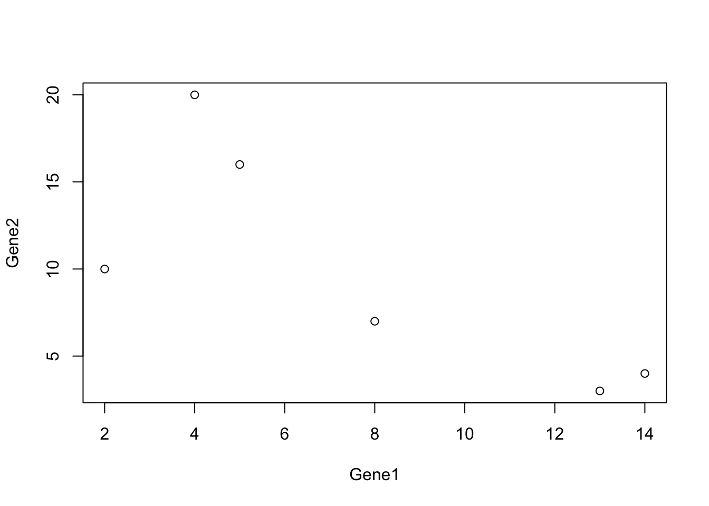
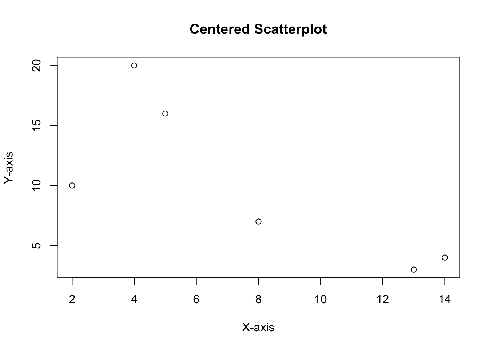
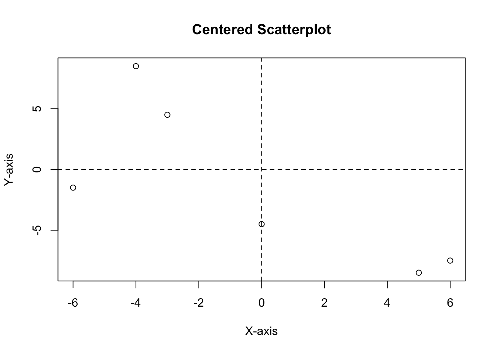

library(ggplot2)Welcome to my first post! I thought of starting of with basics and revising PCA (Principal Component Analysis) since it is an important concept.
To get a better understanding, watch StatQuest videos by Josh Starmer:
I’m going to go step by step and see how I can make this by myself and also then use packages to give a real life example.
PCA finds the best fitted line by maximizing the sum of the squared distances (SS distance) from the projected points to the origin. The distances are squared so the negative values don’t cancel out the positive values.
In practice, the number of PCs is either the number of variables or the number of samples, whichever is smallest.
Once all the PCs are figured out, you can have eignevalues (SS distance) to determine the proportion of variation that each PC accounts for.
Usually, PC1 and PC2 have the highest eigenvalues, so we rotate the axes until PC1 is horizontal and PC2 is vertical. Then you can project points from PC1 and PC2 to get the samples.
Let’s make our sample data. I’m going to make 6 samples with 5 genes expression data.
data = data.frame(Samp1 = c(14,4,1,7,3),
Samp2 = c(13,3,8,2,1),
Samp3 = c(8,7,8,16,5),
Samp4 = c(2,10,3,23,2),
Samp5 = c(4,20,9,5,10),
Samp6 = c(5,16,10,12,2)
)
rownames(data) <- c('Gene1','Gene2','Gene3','Gene4',"Gene5")
data <- t(data)Make a scatter-plot of Gene1 vs Gene2
x = data[,'Gene1']
y = data[,'Gene2']
plot(x,y, xlab = 'Gene1', ylab = 'Gene2') 
Center the data and shift it to the origin
# Create scatterplot
plot(x, y, main = "Centered Scatterplot", xlab = "X-axis", ylab = "Y-axis")
# Determine the range of x and y values
x_range <- range(x)
y_range <- range(y)
# Calculate the center of the plot
x_center <- mean(x_range)
y_center <- mean(y_range)
# Set the new limits for x and y axes to center the plot
new_x_range <- x_range - x_center
new_y_range <- y_range - y_center
# Subtract the mean values from each data point
centered_x <- x - x_center
centered_y <- y - y_center
# Adjust the plot limits to center the scatterplot
plot(centered_x, centered_y, xlim = new_x_range, ylim = new_y_range, main = "Centered Scatterplot", xlab = "X-axis", ylab = "Y-axis") + abline(h=0, lty = 2) + abline(v=0, lty = 2)
integer(0)